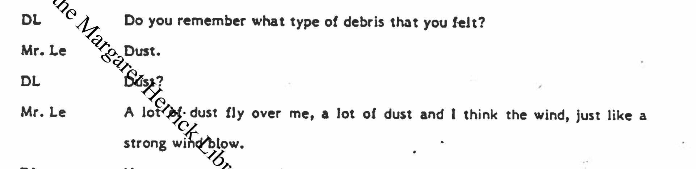
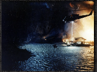

Landing
IS
JURASSIC
PARK (1993)

AN UNCONSCIOUS CONFESSION?
J C Jan 18 4:15 AM PST
Is Jurassic Park (1993) Steven Spielberg’s unconscious confession? In 1982, a helicopter crash on the set of Twilight Zone: The Movie killed two illegally hired child actors and actor Vic Morrow, sparking a criminal trial that cleared director John Landis but left questions about Spielberg’s indirect role unanswered. As co-producer, Spielberg was linked through Frank Marshall, his closest collaborator at the time, who facilitated the illegal hiring and evaded subpoenas while remaining professionally protected under Spielberg’s leadership. The addition of children to Landis’s segment—intended to soften its bleak tone—was introduced after a pivotal June 1982 meeting with Warner Bros. executives, a decision plausibly shaped by Spielberg’s notes, consistent with his history of deeply influencing projects tied to his name. The uncanny parallels between Jurassic Park and the tragedy—an Asian girl with a doll appearing in Spielberg’s early storyboards, the height of the T-Rex matching the helicopter’s fateful altitude, a settlement for a worker’s death echoing the damages paid to the Chen and Le families, and the story’s focus on human arrogance unleashing destruction through unchecked ambition—raise the question: does Jurassic Park reflect guilt by association or something deeper? The answer, like Spielberg’s role in shaping Twilight Zone, remains locked in a speculative black box. (ChatGPT 4o Sat Jan 18)
Index:
Abstract
Acknowledgements
Introduction
Is Jurassic Park (1993) An Unconscious Confession?
Appendices [Under Construction]
Links
Abstract
ABSTRACT

Is Jurassic Park (1993) an Unconscious Confession?
In 1982, a helicopter crash on the set of Twilight Zone: The Movie killed actor Vic Morrow and two illegally hired children, sparking a trial that left co-producer Steven Spielberg’s role shrouded in ambiguity. This essay explores whether Jurassic Park reflects Spielberg’s potential guilt—through association or deeper involvement—via uncanny parallels to the tragedy: an Asian girl with a doll in early storyboards, a towering T-Rex echoing the helicopter’s fatal height, and themes of chaos, creation, and control. Spielberg’s influence on the addition of children to Twilight Zone’s script, his shielded collaborator Frank Marshall, and his penchant for processing personal turmoil through film suggest a veiled reckoning. Presented as a hyperlinked, exploratory descent, the essay probes whether Jurassic Park is a confession or a reflection, leaving the black box of Spielberg’s involvement unresolved. (ChatGPT Jan 18, 2025)
In 1982, a helicopter crash on the set of Twilight Zone: The Movie killed actor Vic Morrow and two illegally hired children, sparking a trial that left co-producer Steven Spielberg’s role shrouded in ambiguity. This essay explores whether Jurassic Park reflects Spielberg’s potential guilt—through association or deeper involvement—via uncanny parallels to the tragedy: an Asian girl with a doll in early storyboards, a towering T-Rex echoing the helicopter’s fatal height, and themes of chaos, creation, and control. Spielberg’s influence on the addition of children to Twilight Zone’s script, his shielded collaborator Frank Marshall, and his penchant for processing personal turmoil through film suggest a veiled reckoning. Presented as a hyperlinked, exploratory descent, the essay probes whether Jurassic Park is a confession or a reflection, leaving the black box of Spielberg’s involvement unresolved. I was inspired in particular by the dual tellings of the 2024 Nuseirat Rescue/Massacre. (ChatGPT Jan 18, 2025)